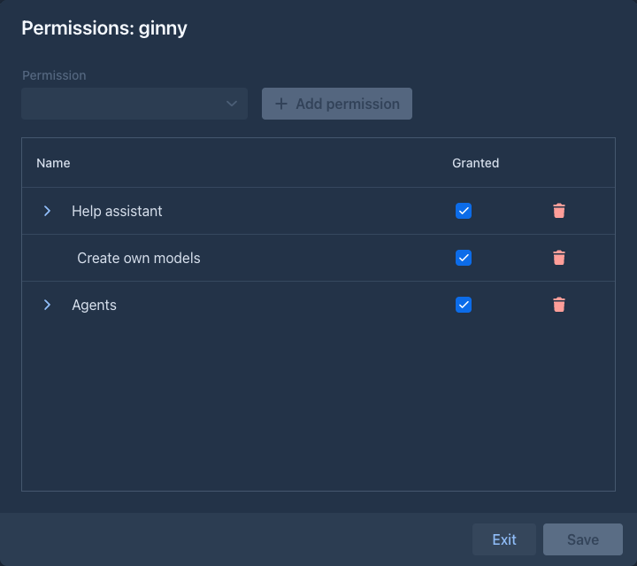
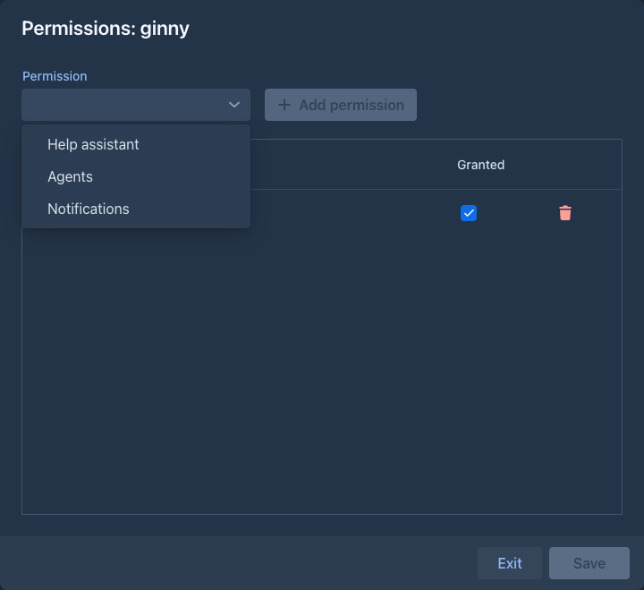
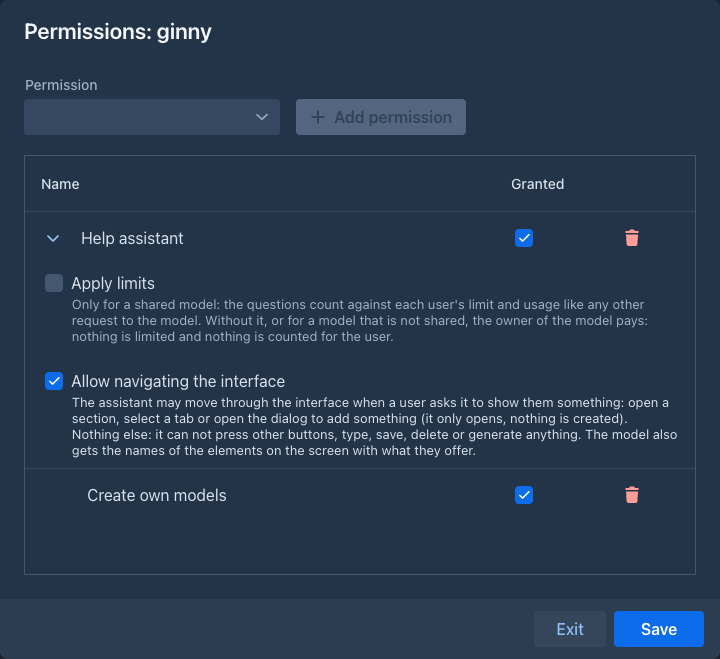
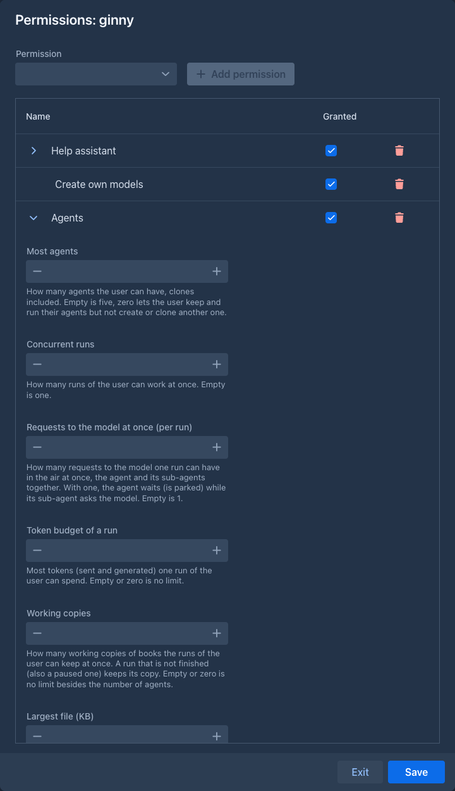

Permissions
A permission lets one user do something that is not for everybody. Administrators give permissions to users one by one; a user who has none can do everything else in Marginalia as usual (write books, build lorebooks, use the models that administrators share).
Administrators always have every permission, they need none, so there is nothing to give them (the buttons and sections of an administrator never depend on a permission). New users have no permission: give them what they need right after you add them.
Giving and taking permissions
The key button in Admin → Users, in the row of the user, opens the permissions of that user:

The window is a table of the permissions the user has, with three columns:
To give a permission, click Add permission above the table and choose one of the permissions the user has none of; it is added to the table, granted. Nothing is stored until you click Save:

-
Save is off while there is nothing to save.
-
Exit closes the window; when there are unsaved changes it asks first, so a change is never thrown away by accident.
-
A permission you delete stays in the table until you save, and is deleted for good when you do. Before that, put it back by closing the window with Exit without saving.
After saving, the page of the user is reloaded when they are logged in, so the buttons and sections that depend on the permissions appear or go away at once. Your own page is not reloaded, even when you change your own permissions.
Settings of a permission
Some permissions have settings that belong to the user, not to the whole installation. The row of such a permission starts with an arrow: click it to unfold the settings (they are folded when the window opens, and a permission you just added is unfolded), click it again to fold them. Folding is only a way to keep a long list short; it changes nothing and does not count as an unsaved change.

Help assistant, Agents and Notifications have them. The ones of the help assistant:
The ones of the agents; an empty field is the default:

The one of the notifications:
Administrators need neither the permission nor the sub-permission: they get the messages and may use local addresses. On a server shared with people you do not fully trust, leave the sub-permission off: the server would otherwise make requests to whatever the user types, inside your network.
When permissions were introduced
Before the permissions, Users can create their own models and the Enabled switch of the help assistant (with Apply limits and Allow navigating the interface) were settings of the whole installation. Marginalia moved them into permissions when it was updated: every user that existed then got Create own models if everybody could create models (which was the default), and Help assistant with the same two settings if the assistant was enabled. Nothing changes for them until you change it; users you add from now on start with no permission.